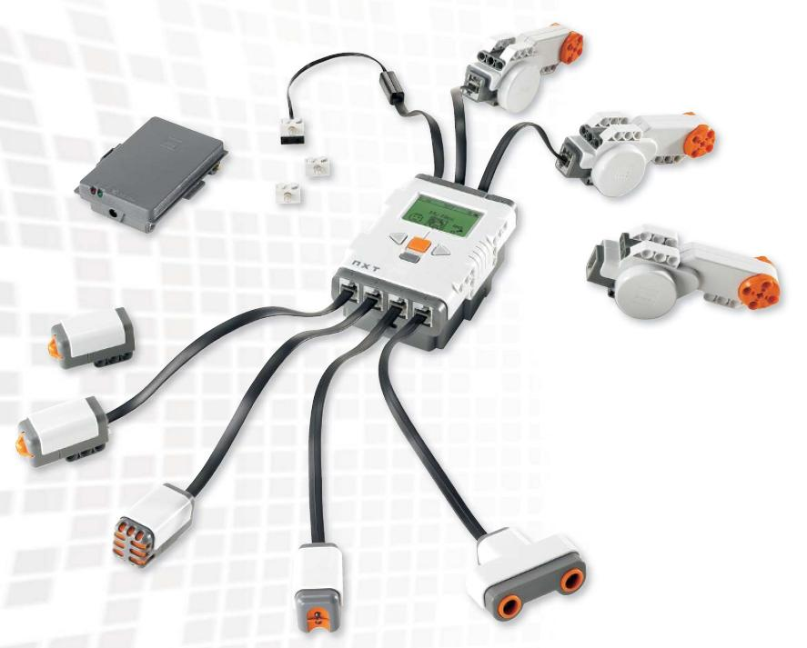

LEGO® Mindstorms NXT Hardware
The LEGO® Mindstorms NXT system is a building kit for creative and individual robots which can be programmed in different programming languages. This RWTH - Mindstorms NXT Toolbox for MATLAB uses the built-in Bluetooth adapter and the wireless communication channel for a MATLAB controlled interaction between the Mindstorms NXT robot and computer.
The LEGO® Mindstorms NXT Education kit contains a rechargable battery, the NXT Intelligent Brick (main unit), three servo motors, three lamps, two touch, a sound, a light and an ultrasonic sensor, wires and LEGO® bricks. These fetures can be used to build a robot which interacts with its environment.

(LEGO ® ©)
- NXT Intelligent Brick
- 3 Servo Motors with rotation sensors
- 2 Touch sensors
- Sound sensor
- Light sensor
- Ultrasonic sensor
- 3 Lamps
- Rechargeable battery